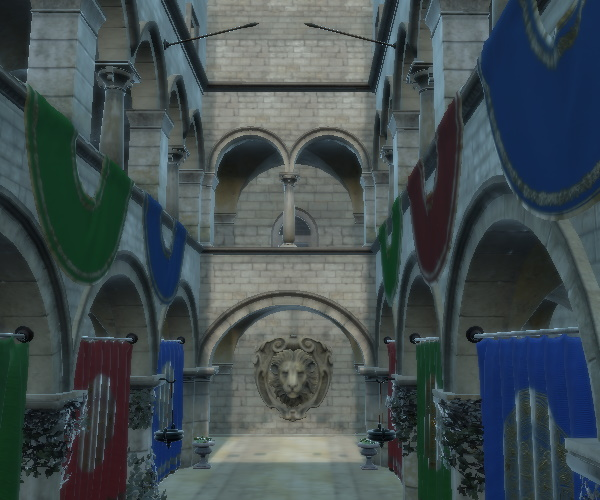
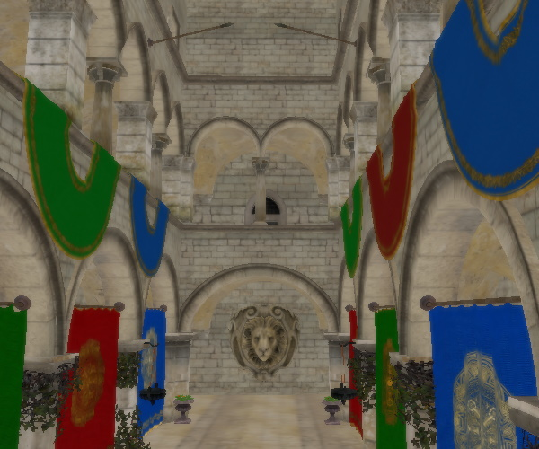
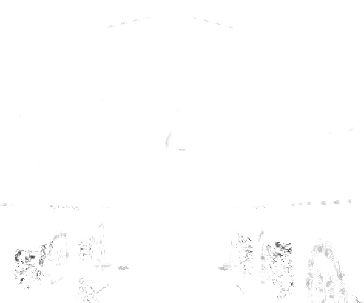
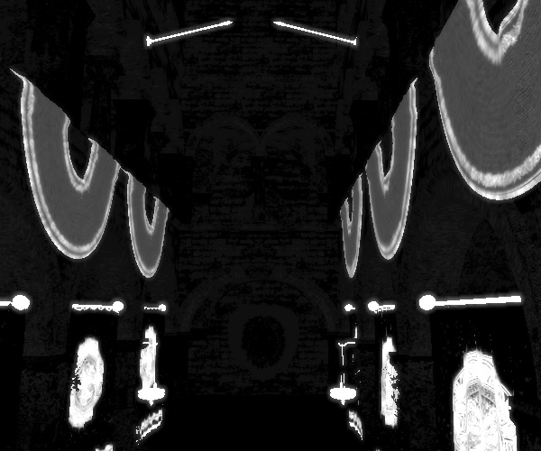
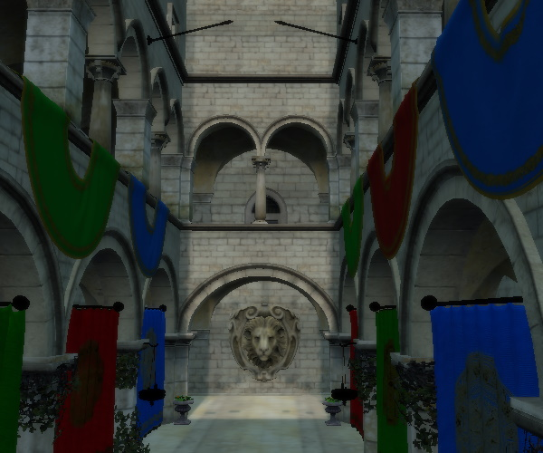
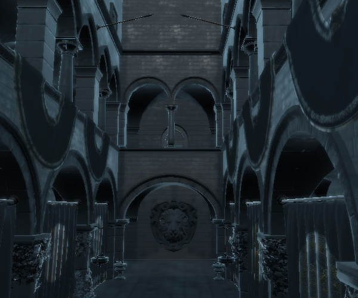
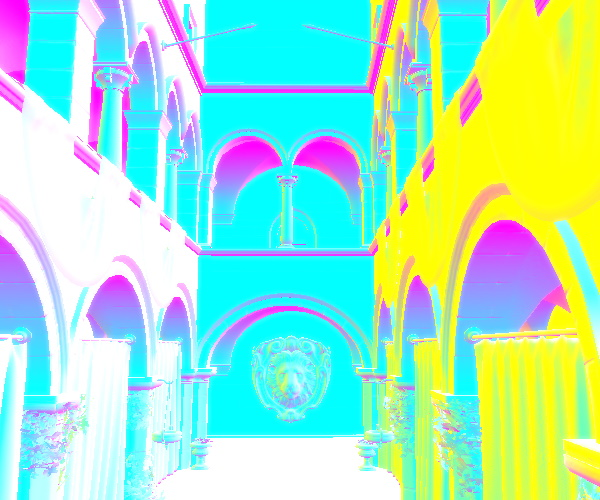
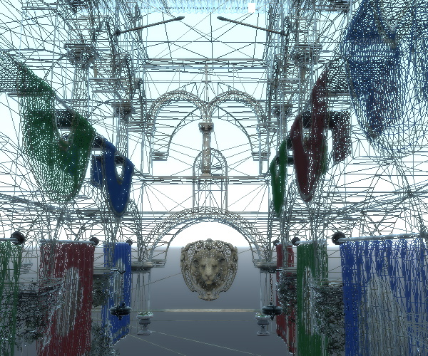

DebugSettings QML Type
Used to configure debug settings. More...
| Import Statement: | import QtQuick3D |
Properties
- materialOverride : enumeration
(since 6.5) - wireframeEnabled : bool
(since 6.5)
Detailed Description
The renderer can be configured to output many different views to facilitate debugging. This component is used to configure these debug views.
In addition to programatic control, properties such as materialOverride and wireframeEnabled can also be controlled interactively via the DebugView item if an instance of that is added to the Qt Quick scene by the application.
Property Documentation
materialOverride : enumeration |
This property changes how all materials are rendered to only reflect a particular aspect of the overall rendering process. This can be used as a debugging tool to get a better understanding of why a material looks the way it does.
The default value is DebugSettings.None
| Constant | Description |
|---|---|
DebugSettings.None | Material overriding is bypassed, rendering occurs as normal. |
DebugSettings.BaseColor | The BaseColor or Diffuse color of a material is passed through without any lighting. |
DebugSettings.Roughness | The Roughness of a material is passed through as an unlit greyscale value. |
DebugSettings.Metalness | The Metalness of a material is passed through as an unlit greyscale value. |
DebugSettings.Diffuse | Only the diffuse contribution of the material after all lighting. |
DebugSettings.Specular | Only the specular contribution of the material after all lighting. |
DebugSettings.ShadowOcclusion | The Occlusion caused by shadows as a greyscale value. |
DebugSettings.Emission | Only the emissive contribution of the material |
DebugSettings.AmbientOcclusion | Only the Ambient Occlusion of the material |
DebugSettings.Normals | The interpolated world space Normal value of the material mapped to an RGB color. |
DebugSettings.Tangents | The interpolated world space Tangent value of the material mapped to an RGB color. This will only be visible if the Tangent value is used. |
DebugSettings.Binormals | The interpolated world space Binormal value of the material mapped to an RGB color. This will only be visible if the Binormal value is used. |
DebugSettings.F0 | This represents the Fresnel Reflectance at 0 Degrees. This will only be visible for materials that calculate an F0 value. |
As an example, take the following scene with the Sponza model. The scene uses image-based lighting via SceneEnvironment::lightProbe and also has a directional light.

Setting DebugSettings.BaseColor:

Setting DebugSettings.Roughness:

Setting DebugSettings.Metalness:

Setting DebugSettings.Diffuse:

Setting DebugSettings.Specular:

Setting DebugSettings.Normals:

This property was introduced in Qt 6.5.
wireframeEnabled : bool |
This property changes how all materials are rendered by changing the polygon fill mode to be lines instead of filled. This appears as a wireframe, but the shaded color will still reflect the respective materials of the meshes.
The default value is false.

This property was introduced in Qt 6.5.